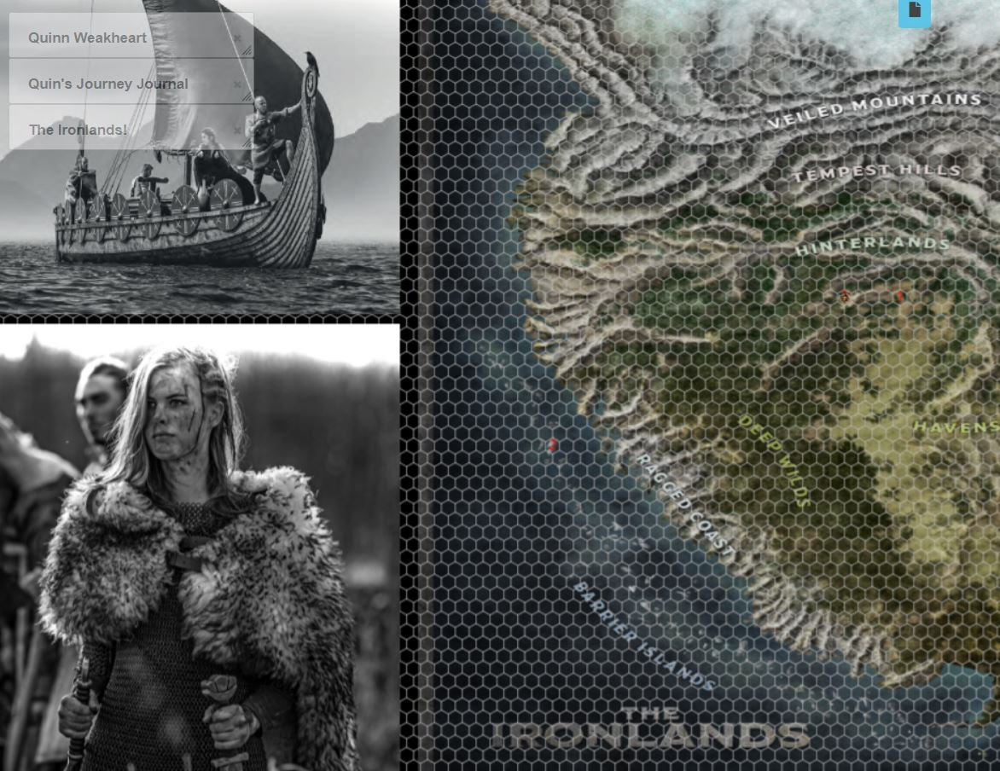
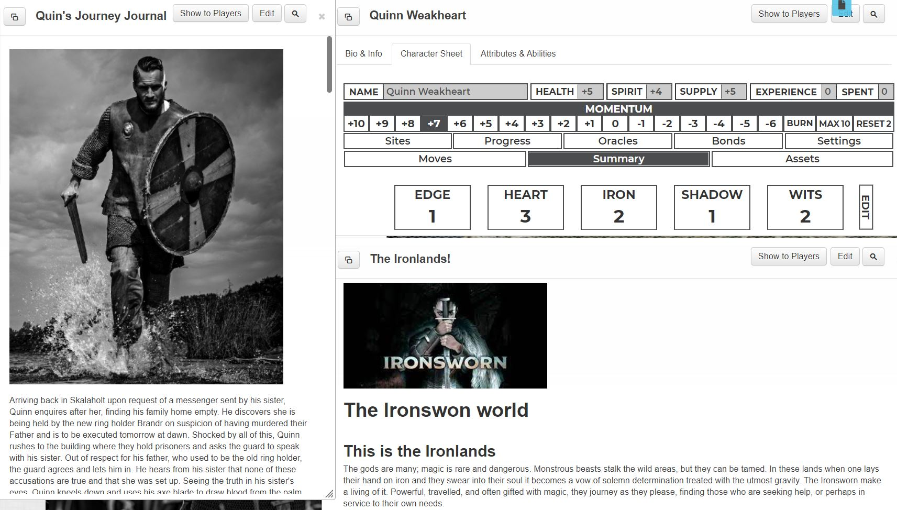

This is the Ironlands
The gods are many; magic is rare and dangerous. Monstrous beasts stalk the wild areas, but they can be tamed. In these lands when one lays their hand on iron and they swear into their soul it becomes a vow of solemn determination treated with the utmost gravity. The Ironsworn make a living of it. Powerful, travelled, and often gifted with magic, they journey as they please, finding those who are seeking help, or perhaps in service to their own needs.
Surprised
A while ago, I had purchased the Ironsworn RPG books as part of a Kickstarter for Ironsworn Starforged (Ironsworn set in space). I had these books sitting in my library for a while, thinking I’d get a few hours and read through them somewhere in the future.
Now for the more emotionally loaded bit. My partner and I lost our twenty weeks old son Quinn. We were told on our twenty weeks checkup that they couldn’t hear a heartbeat. I can tell you that it was the worst day of my life walking out of the hospital. Now I’m not posting this for sympathy and, I believe that others around the world will have experienced even more horrible things. But for me, it still is the worst thing that has ever happened. Tinking back on it even brings up emotions.
What does this have to do with a roleplaying game? To honour Quinn, I decided to make him the protagonist in my Ironsworn adventure. I’m not doing this to draw attention or to deal with the grief. Although I sometimes do find myself wondering what kind of a man he would have grown into. I’m doing this because I thought it would be a great way of commemorating his name.
Additionally, I had to stop the Dungeons and Dragons game I was running for a few friends. There are a few reasons why but I will not go into details on that. The silver lining is that I now have time to focus on the Ironsworn project.
In short, I am blown away by how much I like this system. It does away with the crunchy stats and ability rules that sometimes slow a game down or restrict players in their imagination. It focuses on the roleplay aspect of the game. Every roll comes down to a strong hit, a weak hit or a miss. A strong hit would mean you succeed at what you want to do and maybe even gain some benefits. A weak hit means you succeed as well. However, there’s some consequence, drawback or complication to deal with. And a miss, that means you failed and have to deal with the consequences of that. The game drives the story forwards in unexpected ways and pushes the player to use his imagination. A variety of tables to roll on allows for unforeseen events. A map gives you the lay of the land. A game mechanic called truths sets up the world you’re in with knowledge around civilisations, religion, economy, culture and more.

When I started playing, I got drawn into this world I had created. I started adding more details the further my game session went. I even found myself wondering about social and moral dilemmas thrust upon me by a few rolls on some tables. The hardest part is not to give in to making life easier for your character. Let the dice decide and work with them. That is easier said than done when you’re a fan of your character. I’ve found a ton of resources and a helpful discord server. I’ll add those on the project page when I get around to writing it. My idea is to share Quinn’s adventures with whoever wants to read them. So far, I have written 3844 words describing Quinn’s adventure. I’m not a writer by any means. I’m sure I’ll need to get it proofed and spell checked. English isn’t my first language, so I need to put in additional effort.